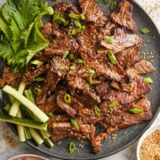

Korean Beef Bulgogi

Description
A super easy recipe for Korean BBQ with the most flavorful marinade! The thin, tender slices of meat cook SO quickly!
Ingredients
- 1 1/2 pounds boneless ribeye steak
- 1/4 cup reduced sodium soy sauce
- 2 tablespoons brown sugar
- 2 tablespoons toasted sesame oil
- 3 cloves garlic (minced)
- 1 tablespoon freshly grated ginger
- 1 tablespoon gochujang
- 2 tablespoons vegetable oil, divided
- 2 green onions, sliced
- 1 teaspoon toasted sesame seeds
Steps
- Wrap steak in plastic wrap, and place in freezer for 30 minutes. Unwrap and slice along the grain into 1/4 slices
- In a medium bowl, combine soy sauce, brown sugar, sesame oil, garlic, ginger, and gochujang. In a gallon size Ziploc bag, combine soy sauce mixture and steak; marinate for at least 2 hours to overnight, turning the bag occasionally.
- Heat 1 tablespoon vegetable oil in a cast iron grill pan over medium-high heat. Working in batches, add steak to the grill pan in a single layer and cook, flipping once, until charred and cooked through, about 2-3 minutes per side. Repeat with remaining 1 tablespoon of vegetable oil and steak
- Serve immediately, garnish with green onions and sesame seeds, if desired.